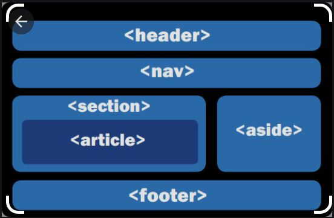

Etiquetas semánticas
Nos ayudan a definir la estructura del documento y permiten que las páginas web sean mejor indexadas por los buscadores, las etiquetas se califican como semánticas si tienen que ver el significado, es decir, si nos informa sobre lo que trata su contenido.
Aula clic. HTML5. Nuevas etiquetas semánticas. Recuperado de: https://www.aulaclic.es/articulos/html5-semantica_1.html
CSS Grid
Permite dividir una página en áreas o regiones principales logrando diseños diferentes de forma
sencilla.
MDN Web Docs. Diseño de cuadricula CSS. Recuperado de: https://developer.mozilla.org/es/docs/Web/CSS/CSS_Grid_Layout